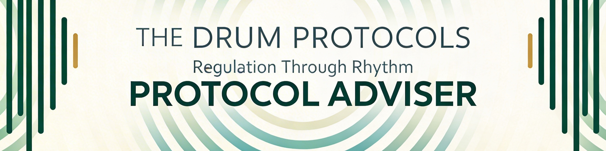

The Drum Protocols
Research
Adviser
Protocols
Data Insights
Safety

The Drum Protocols
Protocol Adviser
Three questions · Your match is waiting
Question 1 of 3
Where you are
Which best describes where you are right now?
Continue →
Your match
—
Entrainment curve
Listener data
—
Responses
—
Avg rating
—
Rated ≥ 7
Rating distribution (0 – 10)
Early data · results will deepen with more responses
About this protocol
Listen
Complete a survey after listening
Quick
1-Second Survey
One rating. That's it.
Full
1-Minute Survey
Rating + optional context
Your data drives protocol development.
Every response matters — including ones that didn't work.
Statistical commentary
Related protocols
▶ Listen on YouTube
View all protocol data → Data Insights
← Start over